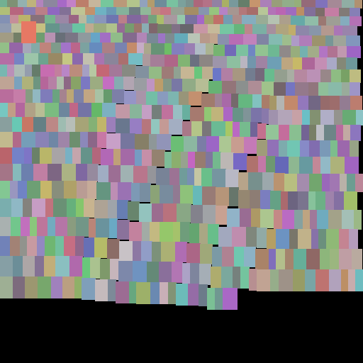

5.4. binpack¶
5.4.1. binpack¶
Copyright @ 2013 Mathias Westerdahl
5.4.1.1. Brief¶
The bin packing functions are implemented by Jukka Jylanki:
- A thousand ways to pack the bin - A practical approach to two-dimensional rectangle bin packing
- RectangleBinPack.zip (public domain)
An example of the Skyline Bottom Left packing algorithm which is default in the font creator
5.4.1.2. Reference¶
- binpack.MAXRECTS_BAF = 4¶
Positions the rectangle into the smallest free rect into which it fits.
- binpack.MAXRECTS_BL = 5¶
Does the Tetris placement.
- binpack.MAXRECTS_BLSF = 3¶
Positions the rectangle against the long side of a free rectangle into which it fits the best.
- binpack.MAXRECTS_BSSF = 2¶
Positions the rectangle against the short side of a free rectangle into which it fits the best.
- binpack.MAXRECTS_CP = 6¶
Chooses the placement where the rectangle touches other rects as much as possible.
- binpack.SKYLINE_BL = 0¶
Bottom left
- binpack.SKYLINE_MW = 1¶
Min Waste
- binpack.create_packer(type, width, height, allow_rotate)[source]¶
Creates a packer instance for use with consecutive calls to pack_rect()
Parameters: - type –
The packing algorithm. Must be one of:
- SKYLINE_BL
- SKYLINE_MW
- MAXRECTS_BSSF
- MAXRECTS_BLSF
- MAXRECTS_BAF
- MAXRECTS_BL
- MAXRECTS_CP
- width – The width of the packing bin (won’t change)
- height – The height of the packing bin (won’t change)
- allow_rotate – Tells the packer if it is allowed to rotate the rects.
Returns: Returns the packer instance. Must be destroyed with destroy_packer()
- type –
- binpack.destroy_packer(packer)[source]¶
Destroys the packer instance
Parameters: packer – The packer instance